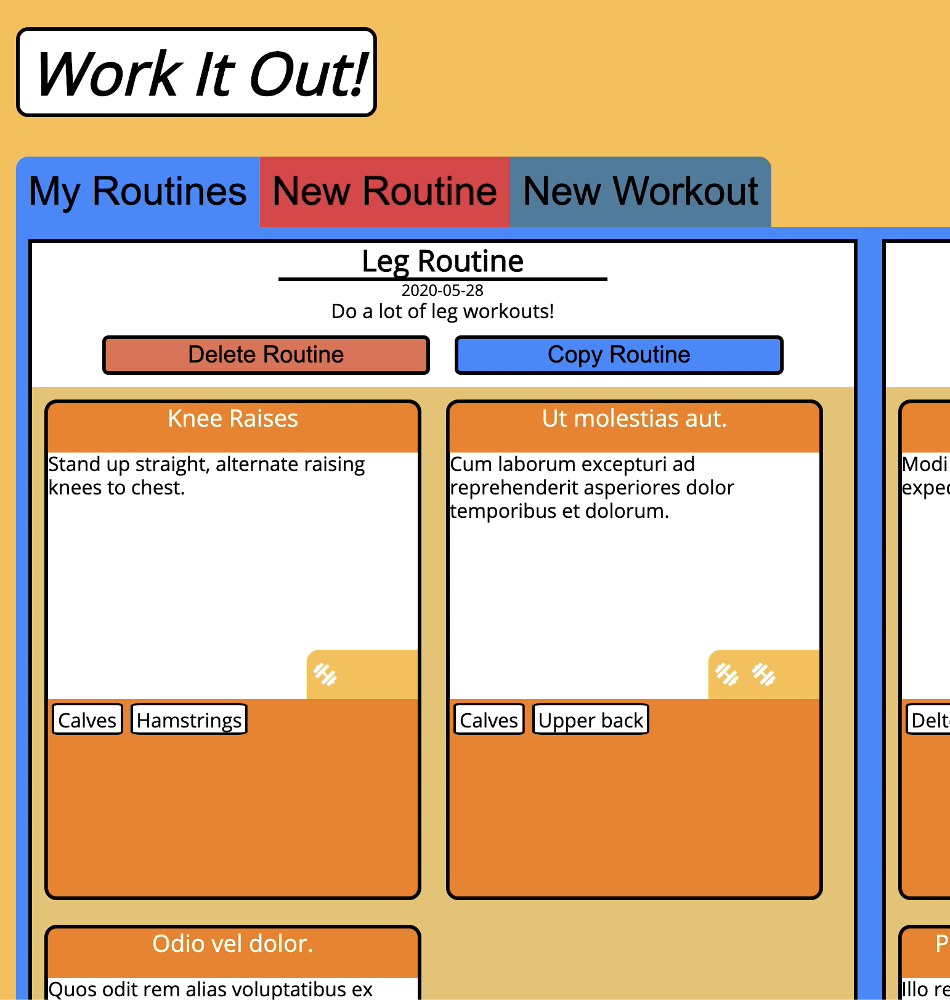

Hi, I'm Tyler Greason
My background is in commercial building energy efficiency, which taught me to approach problems holistically and to always strive for efficiency. When programming just as a hobby stopped sufficing my desire to create, I took the plunge and joined Flatiron School's immersive software engineering program to become a full stack web developer.
I enjoy writing clean, efficient, and functional code. I am happiest working on the front end, creating a user experience that is as much a pleasure to look at as it is to use. Check out my latest project here: stufftodomap.com.
Key competencies: Javascript, CSS, HTML, React, Redux, Ruby, Ruby on Rails, git.
I enjoy writing clean, efficient, and functional code. I am happiest working on the front end, creating a user experience that is as much a pleasure to look at as it is to use. Check out my latest project here: stufftodomap.com.
Key competencies: Javascript, CSS, HTML, React, Redux, Ruby, Ruby on Rails, git.
Let's get in touch


Projects

Stuff To Do Map
adipisicing et in in elit ex. Fugiat consectetur ut irure anim id culpa nisi incididunt deserunt qui eu ullamco eu. Excepteur eiusmod nulla Lorem est incididunt veniam ipsum aliquip dolor reprehenderit anim labore.
- Utilized LeafletJS and OpenStreetMap to quickly create a fully-featured and customizable map.
- Designed so users can create their own attractions, which can be rated by other users.
- Integrated OpenTripMap historical district data to ensure there was something to do in any location.
- Developed with React Redux for more DRY code, drastically increasing development speed.
- Used a Heroku-hosted Rails backend to make API calls, reducing the work done by the client’s machine.

Work It Out!
adipisicing et in in elit ex. Fugiat consectetur ut irure anim id culpa nisi incididunt deserunt qui eu ullamco eu. Excepteur eiusmod nulla Lorem est incididunt veniam ipsum aliquip dolor reprehenderit anim labore.
- Designed using BEM methodology for easily readable and maintainable CSS.
- Utilized SASS for quick development time and to ensure cross-browser functionality.
- Written using MVC design pattern, separating view responsibilities on the frontend from model and controller responsibilities on the backend.
- Frontend written using functional programming, keeping the code DRY and reusable.
Art Forum
adipisicing et in in elit ex. Fugiat consectetur ut irure anim id
- Implemented Metropolitan Museum of Art’s API to present pieces of art and their details to users.
- UEnabled users to comment on art and mark pieces as their favorites.
- Designed using coolors.co to find an appealing color palette that left the art as the focus of each page.
Articles
Data Structures — All About Stack, Heap, and Queue In JavaScript
May 24, 2020
The stack, heap, and queue data structures are hugely important to JavaScript. They make up the underlying structure of JavaScript’s
How I’ve Kept Productive at Coding Bootcamp
Feb 6, 2020
Here we are again. Another two weeks down. Where has the time gone? What has been 14 days feels like two months, and simultaneously like
What I Learned During My First Three Weeks at a Coding Bootcamp
Jan 23, 2020
On January 6th, 2020, I started my journey toward becoming a full-time software developer with Flatiron School’s Immersive Software